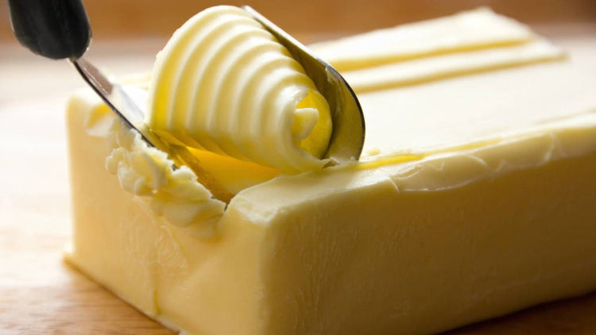
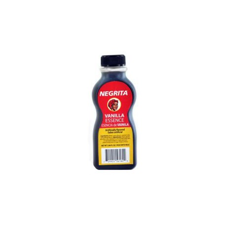
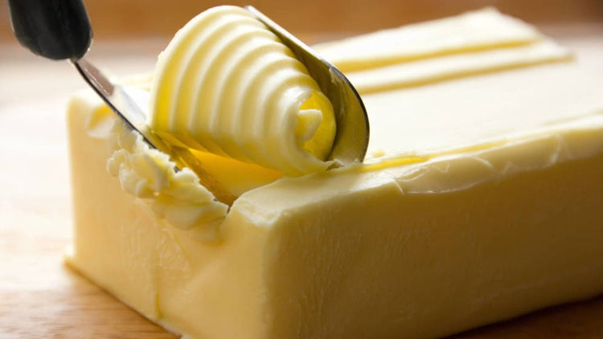
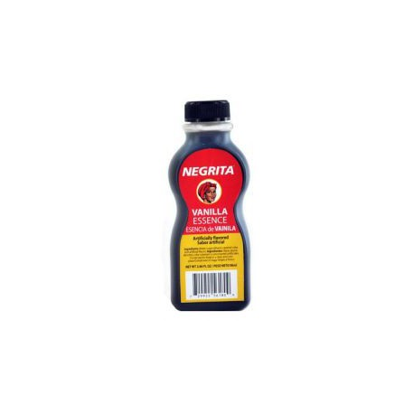
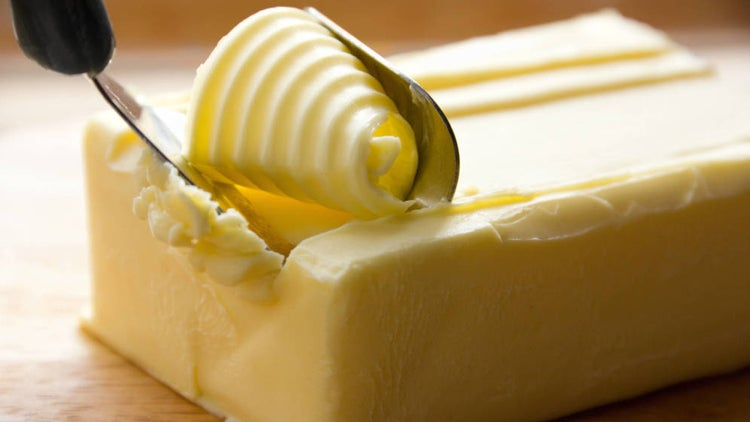
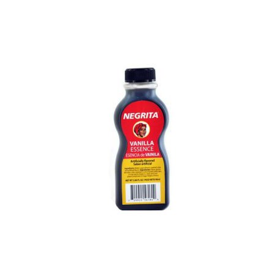

Cogemos los 240 g de galletas Oreo y los metemos en una bolsa tipo zip, y machacamos bien. Las pasamos a un cuenco donde las mezclaremos con la mantequilla derretida (podéis hacerlo en el microondas en pocos segundos).
Mezclamos bien con las galletas y pasamos a un molde desmontable de unos 20 cm(si es más pequeño también vale, la tarta será más alta), donde aplastaremos bien con el canto de una cuchara hasta cubrir todo el fondo.
Llevamos al frigorífico durante 20 minutosaproximadamente.
Para hacer nuestra tarta Oreo, primero mezclamos 400 g de nata con 180 g azúcar y 500 g de queso crema tipo philadelphia (vale cualquier marca).
Lo ponemos todo en un bol junto a 2 cucharaditas de esencia de vainilla y batimos durante 2 minutos con el accesorio de varillas.
Metemos de nuevo 170 g galletas Oreo en una bolsa y machacamos pero esta vez dejando trozos más gruesos que nos encontraremos en la tarta y le darán un punto inigualable de sabor.
Mezclamos con el resto de ingredientes que habíamos batido y revolvemos bien hasta que se integren.
Volcamos al molde que habremos sacado del frigorífico, sobre la base de galletas oreo.
Extendemos bien con una espátula y llevamos a la nevera 20 minutos.
Derretimos 200g de chocolate fondant para postres y 200 ml de nata líquida o crema de leche en el microondas 30 segundos.
Removemos bien con unas varillas y volcamos sobre la tarta una vez saquemos del frigorífico, con mucho cuidado. Para que no caiga con mucha fuerza sobre la tarta volcamos sobre una espátula colocada sobre la tarta.
Llevamos al frigorífico durante al menos 6 horas para que cuaje bien la tarta de Oreo.

